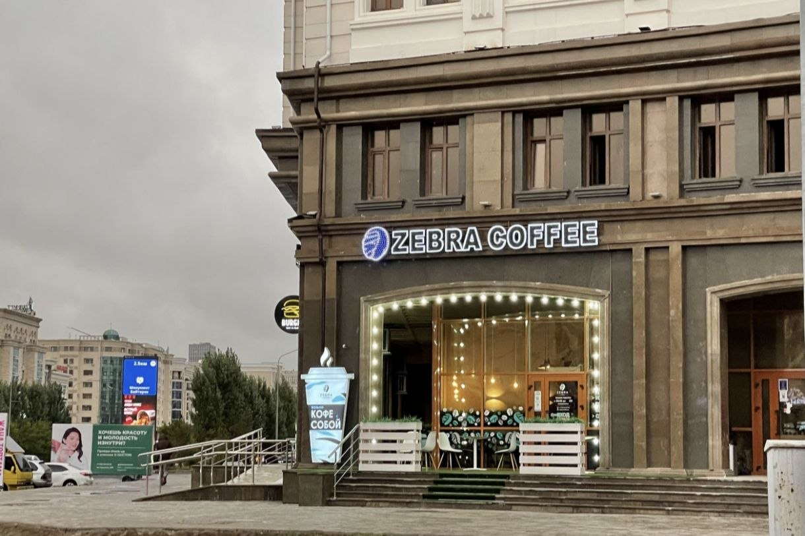
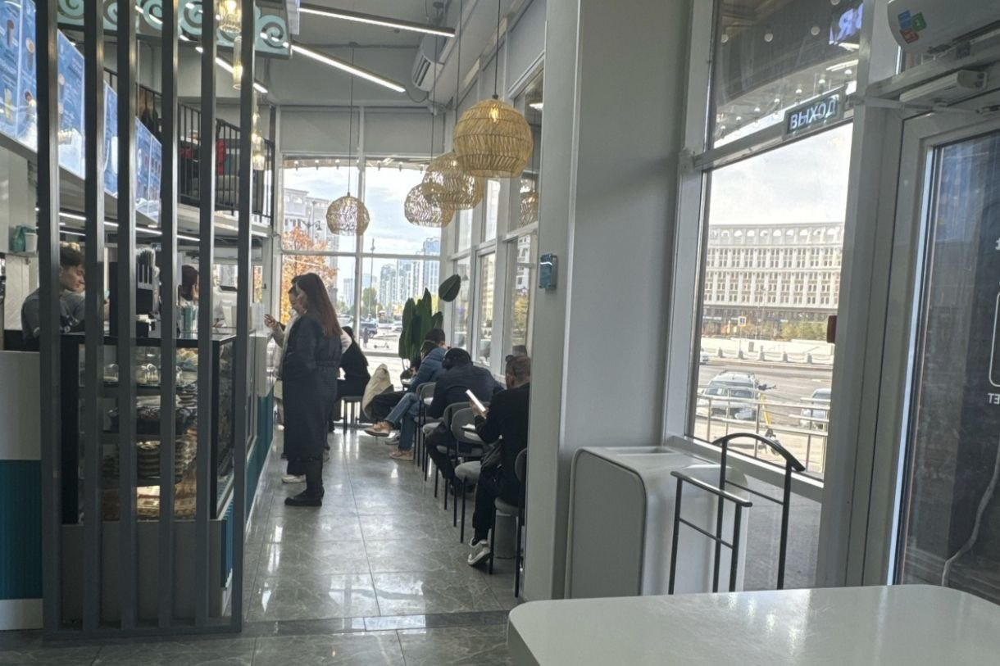
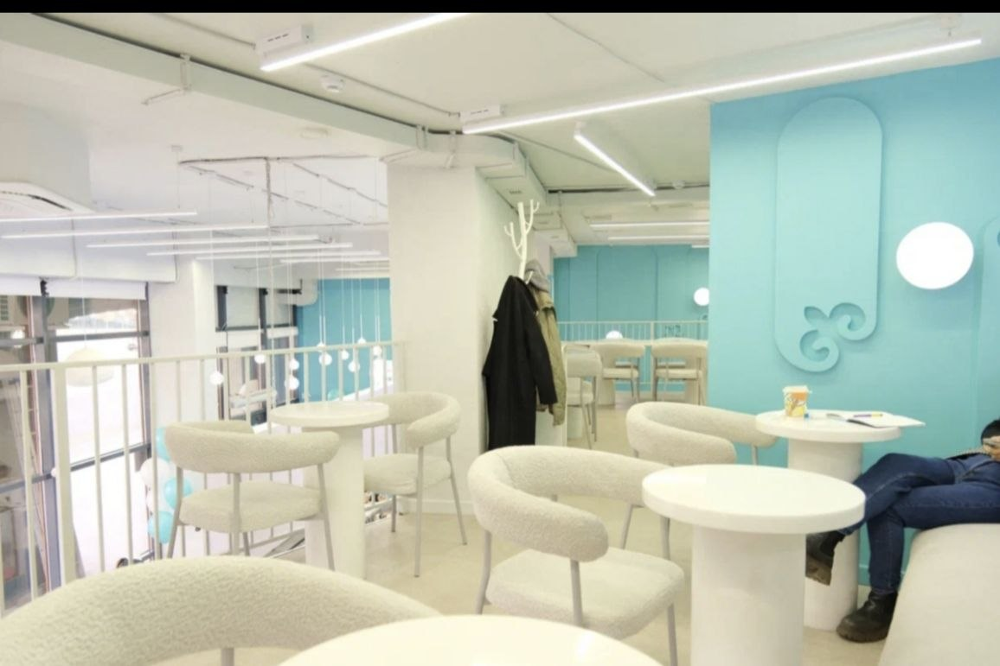
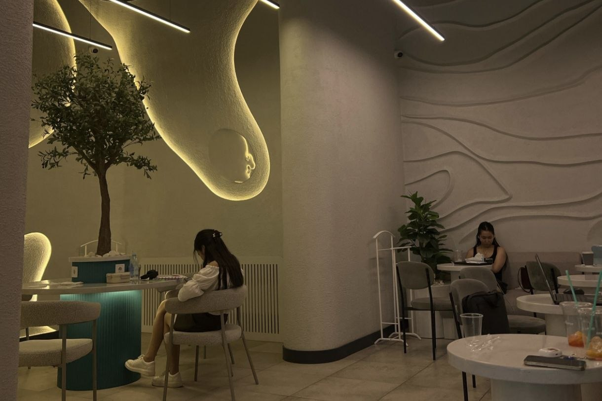

Quick links: Highlights | Gallery
Welcome to Zebra Coffee on Mangilik El
Zebra Coffee is a popular express-format coffee chain. Our branch at 38 Mangilik El Avenue in Astana offers quick takeaway coffee for local residents and students.
We serve freshly roasted beans and guarantee consistent taste with every single cup.
What makes our Spot unique?
Our extensive menu features specialty drinks, dairy-free alternatives such as oat and almond milk, and innovative sugar-free fruit and berry extracts. Customers enjoy complimentary syrup additions, extra espresso shots, and free splashes of milk to build their personal favorite beverage.
Photo Gallery
Authentic photos taken at our Mangilik El location:




Opening Hours
Our doors are open 24 hours a day, welcoming guests day and night without breaks.
"Quality and care in every single cup" — that is the core commitment of our team.